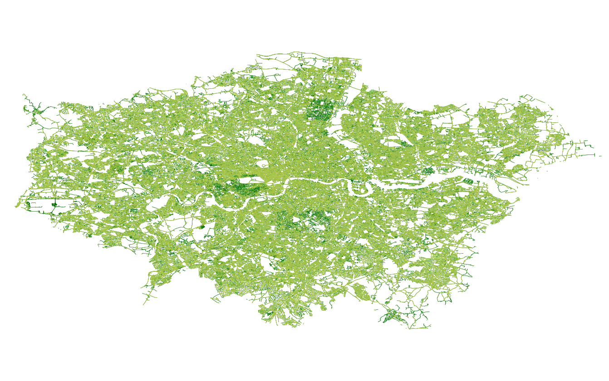

How To Download Google Street View Images
This folder contains all the necessary scripts and steps to take to download Street View Images (GSV) using the Google API. The process can be broken down into the following stages:
- Obtain Google street view API keys
- Download city shape file
- Download roads shape file
- Create grid points from shape file (QGIS)
- Get street view metadata and unique panoramic ids (panoid) (Python, GNU)
- Sample points from roads (python, QGIS)
- Add azimuths to road vertices (python, QGIS)
- Merge panoids to azimuths (postgres)
- Merge road points to panoids + azimuths (postgres)
- Download images (Python, GNU)

The image above shows Greater London Authority area, with road network sampled points (dark green) and downloaded images (light green) for one year.
Requirements
| Program | Version |
|---|---|
| Python | >= 3.7 |
| QGIS | >= 3.14.1-Pi |
| GNU parallel | |
| Postgresql | >= 11.17 |
Downloading images
Source Files (steps 1-3)
Sources are listed below. These files will need to be downloaded manually for London or for a chosen target city. In addition, Street View API keys will need to be generated, see here.
| Dataset | Description | Source | Generalisability | Date downloaded | Path |
|---|---|---|---|---|---|
| London Administrative Boundary | Shape file delineating London as an administrative unity | https://data.gov.uk/dataset/dda6bd34-7532-48f5-80a7-80b858d57f2b/local-authority-districts-december-2017-full-extent-boundaries-in-united-kingdom-wgs84 | Any shape file converted to ESPG:4326 | 2019 | city_admin/greater_london_4326.shp |
| London Roads | Shape file of road network | https://www.ordnancesurvey.co.uk/business-government/products/open-map-roads | Any road network clipped to that same extent as administrative boundary | 2019 | city_roads/gla_streets.shp |
| API keys | api_keys are collected from the Google Cloud Platform and enumerated line by line in a file titled api_keys_original.csv. Another copy is made called api_keys.csv | https://console.cloud.google.com/ | File needs to be made using Google Cloude Platform user credentials | 2019 | api_keys/api_keys.csv and api_keys/api_keys_original.csv |
The folder has the following structure:
source
│ sources.md
└───api_keys
│ └───api_keys.csv
│ └───api_keys_original.csv
└───city_admin
| └───city_4326.shp
└───city_road
└───city_roads.shp
Get grid points, (lat, lon) pairs, from admin shape file
The purpose of this step is to sample the shape file at gridded intervals to create 20m spaced (lat,lon) pairs. These will then serve as input for parallel_gridy.py to obtain street view metadata.
- Import city shape file in QGIS.
- Vector > Research Tools > Create Grid (input: admin shape file; parameters: horizontal spacing in degrees; output: grid).
- Vector > Clip (input: grid; parameters: clip to admin shape file; output: clipped grid to city shape file).
- Right Click > Export layer > as.csv (output: download_images/outputs/points/city_20m.csv).
download_images
| ...
|
└───outputs
└───points
│ └───city_20m.csv
└───metadata
│ └───parallel
│ └───years
└───functions
...
Get street view metadata
In order to make requests to the Google server, we require an API key. When requesting metadata, there is no limit to the number of requests which can be made, although there is a a latency limit. Google provides $200 of credit each month for each API key, which is equivalent to 25K images. Store your API keys in sources/api_keys/ making an original and a copy. The copy will get depleted when running the metadata tasks and must be recopied for each task, subject to cost constraints. The python programme parallel_grid.py will read in API keys in order to obtain metadata.
This step will make use of GNU parallel to speed up processing time. Feeding as input parallel chunks of the (lat, lon) pairs to the python programme parallel_gridy.py, which then aggregates image metadata into multiple dictionaries. Our outputs are large dictionaries of panoids of the format {'panoid': [lat, lon, month, year]}. The function includes a filter on images which are not owned by Google and which do not have Status: OK.
Part 1
Create a new directory outputs/metadata/parallel. This will store the printed output from the parallel python metadata scrape. Make sure gnu parallel is installed and run:
cat outputs/points/city_20m.csv | parallel --delay 1.5 --joblog /tmp/log --progress --pipe --block 3M --files --tmpdir outputs/metadata/parallel python3 functions/parallel_grid.py
outputs/city_20m.csv is stdin.
- parallel calls gnu parallel
- --delay 1.5 creates a 1.5 second delay in sending each parallel chunk to be processed. This is used to feed in each API key.
- --joblog prints log to '/tmp/log' and tells the time (important! copy and paste into city folder after execution!)
- --progress prints job progress to terminal
- --block 1M splits stdin into 1M size chunks (make sure there are enough API keys for each block or make blocks bigger)
- --files prints location
- --tmdir path to save location of output files
- --python3 parallel_grid.py calls the function to be executed.
!NB for dev, remove --files -tmpdir... and replace with --ungroup and retrieve output to terminal.
Part 2
Create a new directory in outputs/metadata/years. This will store the aggregated output of the parallel script separated by years. run:
python3 functions/parallel_output.py city_20m outputs/metadata/parallel/ /outputs/metadata/
The first argument is the city_20m name given tofiles. The second argument is the path to parallel metadata output and the third argument is path to save aggregated metadata.
Sample points from roads
get_road_points.py will sample 20m distance points along all roads in the city_street.shp file and output a .shp file containing sampled points. The function uses the pyQGIS module and requires qchainage plugin from QGIS.
python3 functions/get_road_points.py source/city_roads/city_streets.shp outputs/roads/city_road_points_20m.shp
The first argument inputs road shape file location and the second argument passes save file and location. There are no tests for this function since the qgis plugin is not a python module itself therefore must be imported from QGIS plugins path (amend as necessary in file). Python version must mast python version for QGIS.
Open this shape file in QGIS and export as .csv for step 8.
Add azimuth to road vertices
One step in data cleaning is to get the azimuth angle of the road to north bearing. This will then serve as a rotation of camera input when we download the images. This will be necessary since inputting standard 90 degrees is often offset and does not give a perpindicular angle to the road. The azimuth.py function uses the pyQGIS module and requires Azimuth plugin from QGIS.
- Import city_roads shape file into QGIS
- Vector > Geometry > Extract Vertices (input: city_road.shp; output: Takes a vector layer and generates a point layer with points representing the vertices in the input geometries)
- Vector > Geometry > Add Geometry Attributes (input: output from previous step; output: Computes geometric properties of the features in a vector layer and includes them in the output layer)
- Export layer > as .shp (output: outputs/roads/city_road_vertices_geom.csv)
In the final step we will call the function azimuth.py to get azimuth angles from vertices in shape file and merge back to our exported layer.
python3 azimuth.py source/city_roads/city_streets.shp** outputs/roads/city_road_vertices_geom.csv outputs/roads/
The first argument is the location of the streets shape file, the second argument is the location of our QGIS output and third argument is save location of our new azimuth file. **city_streets.shp file needs to be single parts.
Merge panoids to azimuth
The final steps utilise psql to merge panoid metadata to azimuths to serve as input for download. It requires the installation of postgres. Once you have downloaded postgres and created user, create database as follows:
sudo su - postgres
psql
CREATE DATABASE city;
psql -U user -d city -f functions/panoids_azimuth_merge.sql
Change path to root_dir in lines 35 and 39.
Merge road points to panoids + azimuths
The next step is to sample panoids by the 20m road intervals. This ensures one area is not over sampled, and furthermore, have an approximation of GSV road coverage.
psql -U user -d city -f functions/roads_panoids_merge.sql
remove duplicate IDs by specifying path in function/remove_duplicate_ids and run
python3 functions/remove_duplicate_ids.py
Download images
Now we can download the images using the final output from the previous step, python and gnu parallel. Remember to copy back the original api_keys_original.csv to api_keys.csv. We will first convert the sampled panoids to plain text as follows:
split -l 40000000 -d city_road_sample_panoids_unique.csv to_download/city
from to_download/city remove the header manually. We are now ready to download the images. In get_images.py append the save path to suit your own local or remote drive. Ensure that there is enough space on your drive (each image is around 600kB) and run
cat outputs/psql/to_download/city | parallel --delay 1.5 --joblog /tmp/log --pipe --block 2M --ungroup python3 functions/get_images.py
This function will download 2 angles per panoid, facing either side of the street. When blocking files for input, 2MB should ensure that each API key will download 25K images.